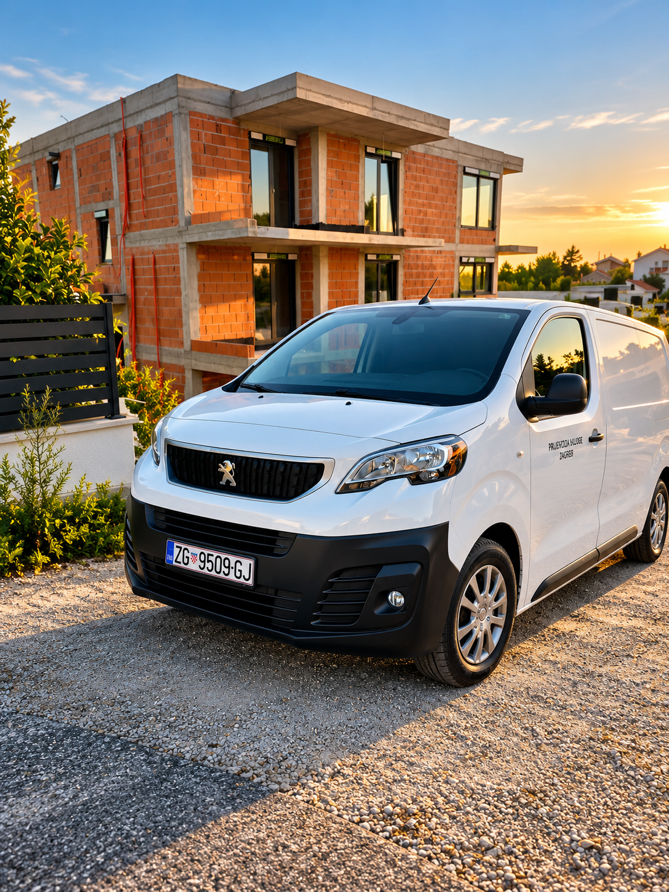
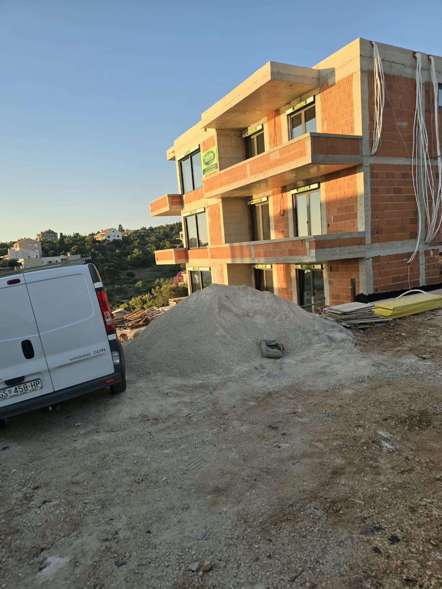
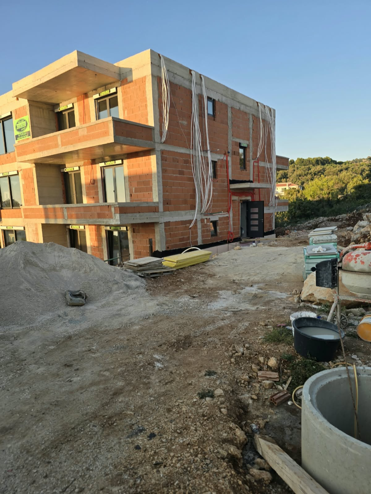
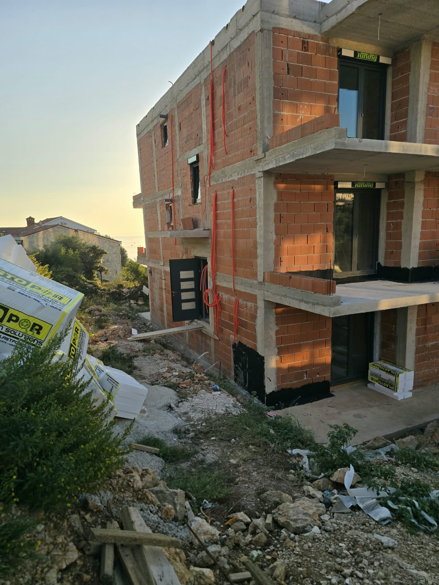
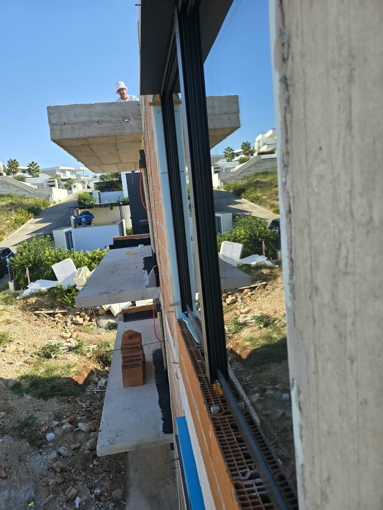

Hidroizolacija
Na fotografijama je vidljiva zaštita donjih zona objekta i priprema površina za nastavak građevinskih slojeva. Hidroizolacija je važan dio zaštite konstrukcije od vlage.
Pregled projekta stambenog objekta kroz fotografije s gradilišta – od roh-bau faze i armiranobetonske konstrukcije do hidroizolacijske zaštite, vanjske stolarije i pripreme instalacija.
Pogledajte projekt Zatražite ponuduOvaj projekt prikazuje stvarno stanje stambenog objekta tijekom izgradnje. Fotografije omogućuju pregled izvedenih elemenata, organizacije gradilišta i pripreme objekta za sljedeće faze radova.
Na projektu su vidljivi elementi roh-bau gradnje, armiranobetonske ploče i vertikalni elementi, zidanje, izvedeni građevinski otvori, vanjska stolarija te priprema instalacijskih trasa. Na donjim zonama objekta vidljiva je i hidroizolacijska zaštita koja predstavlja važan dio zaštite konstrukcije od prodora vlage.
Pro in mont jedan j.d.o.o. organizira građevinske radove prema konkretnom projektu i dogovorenom opsegu. Ovisno o potrebama investitora, pojedine specijalizirane faze mogu se koordinirati s partnerima iz područja elektroinstalacija, HVAC sustava, projektiranja, nadzora i drugih struka.
Galerija je namijenjena investitorima koji žele vidjeti kako izgleda stvarno gradilište i na koji se način različite faze gradnje međusobno nadovezuju.







Na fotografijama je vidljiva zaštita donjih zona objekta i priprema površina za nastavak građevinskih slojeva. Hidroizolacija je važan dio zaštite konstrukcije od vlage.
Ugrađena vanjska stolarija i izvedeni otvori prikazuju fazu u kojoj objekt dobiva zatvorenu ovojnicu i priprema se za nastavak radova.
Na vanjskim zidovima vidljive su pripremljene instalacijske trase i izvodi koji se usklađuju s ostalim građevinskim i instalaterskim fazama.
Svaki projekt ima svoje tehničke uvjete, rokove i potrebe. Zato opseg radova definiramo prema stvarnom stanju objekta, dokumentaciji i dogovoru s investitorom.
Organizacija i izvedba građevinskih faza koje čine osnovu objekta – zidanje, AB elementi, ploče i priprema za nastavak gradnje.
Koordinacija potrebnih instalaterskih i specijaliziranih faza s odgovarajućim izvođačima i partnerima.
Planiranje redoslijeda radova kako bi se građevinske i instalaterske faze mogle pravilno nadovezivati jedna na drugu.
Želite razgovarati o svom projektu? Pošaljite osnovne podatke o objektu, lokaciji i potrebnim radovima.
Zatražite ponuduPovratak na vrh ↑